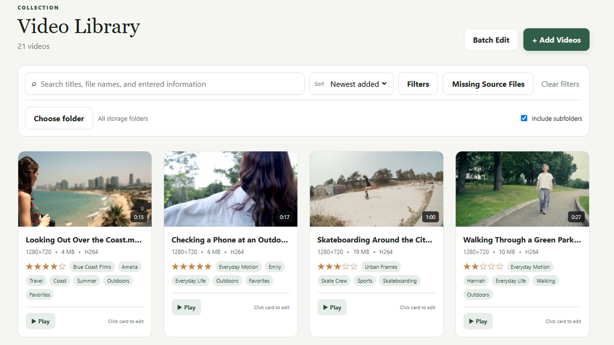
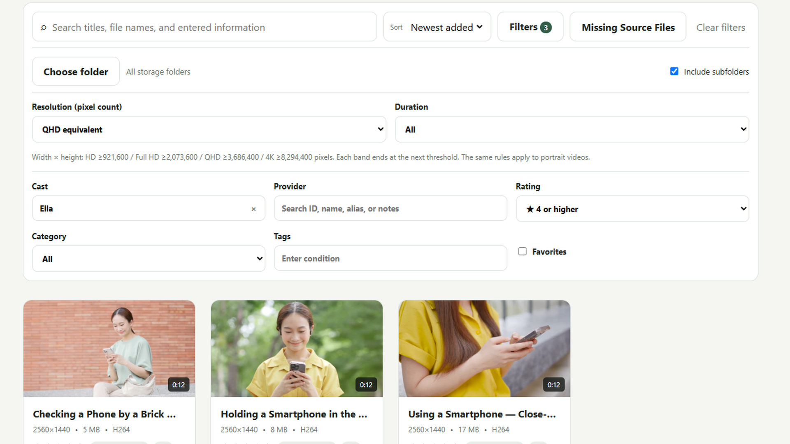

Select videos. Add them together.
Add multiple videos to your library at once. Thumbnails, duration, resolution, and other basic details are generated or read automatically, so you don’t have to enter them one by one.
FrameCatalog is a video organizer for Windows and a local video library manager.
Bring your PC’s videos into one searchable library. See what is inside with hover previews, then organize with ratings, tags and fully customizable fields.


Add multiple videos to your library at once. Thumbnails, duration, resolution, and other basic details are generated or read automatically, so you don’t have to enter them one by one.
Hover over a thumbnail to play a video preview and check the content before opening it. Click Play to watch the video in your usual video player.
Register multiple aliases for each performer. When editing video details, search for performers by name, alias, reading, or notes. Keep the same person organized under one record, even when their name appears differently.
Choose both the name and input format of each field to suit your way of organizing. Choose text, numbers, dates, choices, multiple values, checkboxes, and other formats to suit the information you manage.
For example, use a date field for “Purchased on,” a choice field for “Genre,” and long text for “My notes.” Add the fields you need and make the library your own.
Back up and restore your library information. Original video files are not included in library backups, so keep separate copies of those files.

Filter by performer, provider, storage folder, resolution, or duration. Include subfolders when searching within a folder.
Your videos stay in their original locations. Removing an entry from the library does not delete the original video file.
Keep video ratings, performer star ratings, and favorite ranks separate, and organize your collection around your preferences.
Give performers a favorite rank independent of their star rating. A badge at the top left of each ranked card shows its position. Unranked performers display no badge.
Adjust ranks with arrows, drag and drop, or a specific position as your preferences change.
Add an optional name reading or sort name. When editing video information, find performer suggestions by name, alias, or reading. Sort performer management by ID, name, reading, favorite rank, date of birth, or rating.
When no reading is entered, sorting uses the name. Your chosen sort order is kept after restarting the app.
Use “View videos” on a performer card to show only videos featuring that person in your library. Return to performer management and continue from the card you were viewing.
Save buttons in performer management, provider management, and field customization stay visible at the bottom of the screen, together with an unsaved-changes indicator.
In field customization, see which choices are in use and restore values accidentally removed or changed without losing your other edits. You can also discard unsaved field settings together.
Read and sort by capture dates and times, filter by date ranges, and review import results.
FrameCatalog reads capture dates and times from video metadata when you add videos. You can enter or correct them manually. When sorting by capture date, videos with a known capture time are also ordered by time within the same day.
The capture date appears below the thumbnail, with the time when known. No capture date is shown when it is unknown. Automatic detection depends on the metadata recorded in the video.
Filter capture dates and your custom date fields by a date range. Set both dates or just a start or end date, and combine them with other filters such as performer or storage folder.
Review videos that could not be added in a list with the reason for each failure. Save the list as a text file so you can check formats or file locations later.
Built-in ratings and tags, AND/OR filtering, and tag management help you organize and find your videos.
Built-in ratings and tags make it easy to get started. Click a registered tag or select a search result with Enter. Create a new tag when you need one.
Find videos with both Travel and Nature using AND, or either tag using OR. Combine tag filters with your other search conditions.
Rename tags without assigning them to your videos again. Merge related tags and reorder them with arrows or drag and drop. Your chosen order also applies to editing suggestions and tag filters.
Fields with saved values are protected from accidental type changes. Video details, ratings and tags, and custom fields are grouped in a sidebar so you can adjust filters while viewing your videos.
Filters sit on the left, with your video library on the right. Adjust conditions while checking thumbnails and hover previews. Collapse the sidebar when you want more space, or open it as needed in a narrow window.
Rate performers on a five-star scale, separately from your video ratings. Find videos with at least one performer rated four stars or higher, for example. Performer selection lists also show rating stars.
Add an optional date of birth to see a performer’s current age. For videos with a recording date, cards and the video editor also show their age at recording. Ages are omitted when the required dates are unknown.
Ages at recording are calculated from the saved recording date. If a video’s metadata does not reflect its actual recording date, you can correct the date manually.
After replacing a video at the same location and filename, refresh its information from the video editor. Update resolution, duration, thumbnails, and previews while keeping performers, providers, ratings, tags, and other entered information.
If generation fails, the previous registration information is kept. Refreshing does not modify the original video file.
Record hairstyle, clothing, role and other details for each performer in each video. Keep dates of birth and personal ratings in performer management, and record details that vary by video in the video editor.
Search for conditions that apply to the same performer, such as a particular performer with long hair. Choose multiple-choice filter values from a list and combine them with AND or OR.
Expand or collapse video information, ratings and tags, custom fields, and performer details in each video independently. Your layout is remembered between sessions. Conditions stay active when a group is collapsed, with a count showing the filters in use.
Batch editing keeps action buttons visible and shows the selected video count and fields to change. Used choices are protected from accidental removal or renaming. Check which videos use a field, and scroll automatically at the window edges while dragging fields into order.
FrameCatalog supports 64-bit (x64) Windows PCs. Switch the app interface between English and Japanese.
Library information, thumbnails, and previews are stored on your PC. Larger collections take longer to add and require free disk space for previews and other generated files.
Windows must support H.265 (HEVC) to generate thumbnails and previews from HEVC videos. Depending on your setup, you may need to install HEVC Video Extensions separately from Microsoft Store. The extension may require a separate purchase.
Video compatibility depends on the internal codec and profile, as well as your PC’s capabilities, not just the file extension. MPEG-1, MPEG-2, and MPEG-4 Visual use bundled video processing components. H.264, H.265 (HEVC), and VC-1/WMV9 use Windows video features. Support for every video format is not guaranteed. Before purchasing the upgrade, use the free version to test importing, thumbnails, and previews with your own videos.
Adding a video does not convert or overwrite the original file. Previews are short and silent. Click Play to open the full video in your usual player.
No. Register videos from your PC or external drives and manage them in their original locations.
Find videos across folders using ratings, tags, performers and custom fields. Combine AND or OR tag filters with resolution, duration and recording date.
Hover over a thumbnail to play a short, silent preview. For full-length playback, the play button opens your usual video player.
Add up to 50 videos for free and test thumbnails and previews with your own files. A one-time purchase removes the library size limit. There is no monthly subscription.
For questions about FrameCatalog or to report a problem, please email us.
orivelaworks@gmail.comPlease include your app version, Windows version, the steps that led to the problem, and any error message you saw.
Do not send passwords or payment details. If you attach a screenshot, hide any personal information or private video names.
How we handle your data